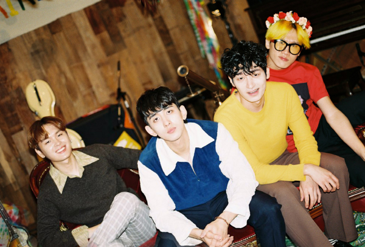

- SINGER
- JANNABI
대체 뭔일이 일어난 거야 92년도에 이들은 모두 원숭이 띠이다. 밴드 이름도 원숭이를 뜻하는 말인 잔나비를 그대로 사용했다. 이들은 모두 졸업 후 본격적인 밴드로 데뷔 하고자 기획사를 찾아 다녔고 몇년간 각자 소속사에서 연습생으로 활동을 하였다. 그렇다가 다시 2012년에 잔나비가 모여서 활동을 하게 되었다. 그들은 처음에 버스킹 활동을 하면서 인지도를 얻었고 신사동 호랭이가 도움을 준 것을 계기로 잔나비는 본격적인 활동을 하였다.인디를 뚫고 나온 대중성 잔나비는 이미 공식 팬카페에 1700명의 팬이 있다. 현재 그들은 OST등의 다양한 활동을 하며 콘서트 400석을 5초만에 매진시키는 성과를 보여주기도 했다. 이들은 빽도 못도 없이 자신들의 노래를 가지고 승부수를 띄웠다.
잔나비는 현재 가장 인기있는 밴드 중 하나이다. 갑작스럽게 떠오른 것 같은 느낌이 들 수도 있지만 그들이 지금까지 보여준 것은 스토리가 있는 앨범이다. 잔나비의 앨범은 앨범 커버와 그 노래의 이미지 하나 하나를 신경써서 그린다.그 만큼 많은 사람들에게 사랑받아 오는 것에는 이유가 있다. 특히 잔나비의 앨범커버의 내용은 하나하나를 알고 보면 너무나 재미있는 내용들이 많다. 다음에 기회가 된다면 많은 사람들에게 추천해주고 싶을 정도의 내용이다.다양한 구성으로 재미있게 스토리텔링을 한 것이 잔나비의 뜬 요소인 것 같다.